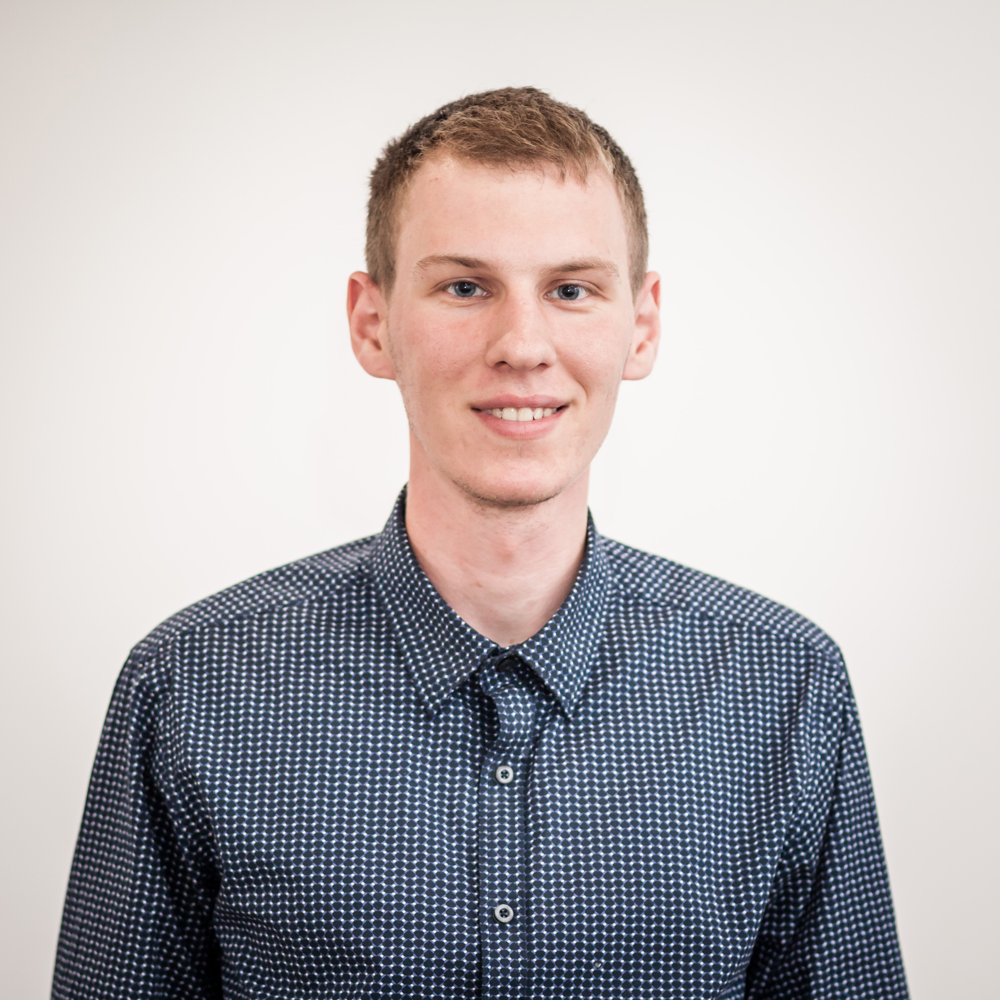

MAKSYM SERDYUK

CONTACT INFORMATION
- E-MAIL: serdyukmaxim1996@gmail.com
- PHONES: 099-753-86-51, 068-426-23-35
EDUCATION
- September, 2002 - May, 2013 - Kharkiv Gymnasium №152
Profile: Physics and Mathematics
- September, 2013 - June, 2017 - National Aerospace University "Kharkiv Aviation Institute"
Specialty: "Telecommunications"
- Bachelor's Diploma with Honors;
- September, 2017 - Present Time - National Aerospace University "Kharkiv Aviation Institute"
Specialty: "Information
Communication Networks" - Master degree
ADDITIONAL EDUCATION
- June, 2016 - QATestLab Training Centre - "The basics of Software Testing" - The sertificate of successful completion;
- July - September, 2016 - EPAM QA External Training - participant;
- March, 2017 - Tempus Serein Project (NAU "KhAI" and Khmelnytskyi National University) - "Malicious software and technologies
of antivirus protection - participant;
- November, 2017 - DataArt IT School - The sertificate of successful completion
WORK EXPERIENCE
- March - June, 2017 - Sigma Software - Test Engineer Intern